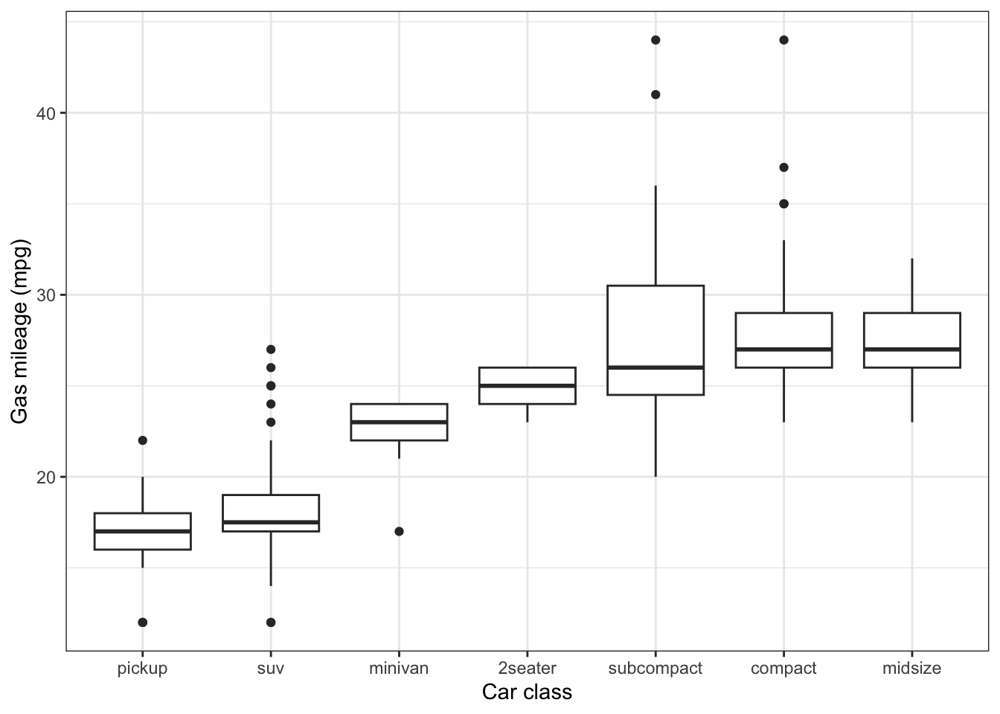
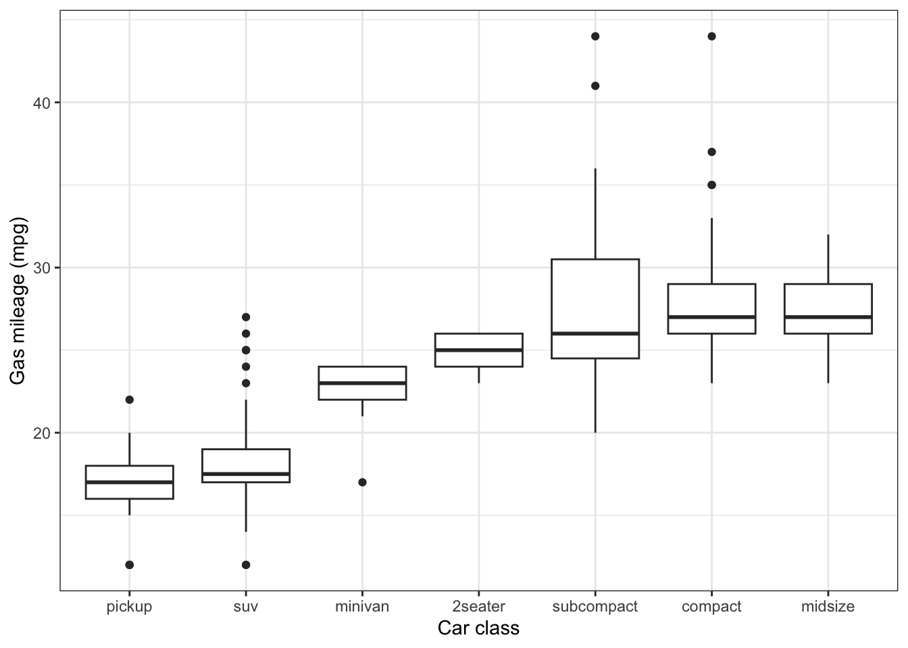

library(tidyverse)
mpg |>
ggplot() +
geom_boxplot(aes(x = fct_reorder(class, hwy), y = hwy)) +
labs(x = "Car class", y = "Gas mileage (mpg)") +
theme_bw()
See also Agresti 2.3.2-2.3.3
Let’s consider the special case of the ANOVA decomposition (5.2) when the model matrix \(\boldsymbol{X}\) represents a single categorical predictor \(w\). In this case, each observation \(i\) is associated with one of the \(C\) classes of \(w\), which we denote \(c(i) \in \{1, \dots, C\}\). Let’s consider the \(C\) groups of observations \(\{i: c(i) = c\}\) for \(c \in \{1, \dots, C\}\). For example, \(w\) may be the type of a car (compact, midsize, minivan, etc.) and \(y\) might be its fuel efficiency in miles per gallon.
library(tidyverse)
mpg |>
ggplot() +
geom_boxplot(aes(x = fct_reorder(class, hwy), y = hwy)) +
labs(x = "Car class", y = "Gas mileage (mpg)") +
theme_bw()
It is easy to check that the least squares fitted values \(\widehat{\mu}_i\) are simply the means of the corresponding groups:
\[ \widehat{\mu}_i = \bar{y}_{c(i)}, \quad \text{where}\ \bar{y}_{c(i)} \equiv \frac{\sum_{i: c(i) = c} y_i}{|\{i: c(i) = c\}|}. \]
Therefore, we have:
\[ \text{SSR} = \sum_{i = 1}^n (\widehat{\mu}_i - \bar{y})^2 = \sum_{i = 1}^n (\bar{y}_{c(i)} - \bar{y})^2 \equiv \text{between-groups sum of squares (SSB)}. \]
and
\[ \text{SSE} = \sum_{i = 1}^n (y_i - \widehat{\mu}_i)^2 = \sum_{i = 1}^n (y_i - \bar{y}_{c(i)})^2 \equiv \text{within-groups sum of squares (SSW)}. \]
We therefore obtain the following corollary of the ANOVA decomposition (5.2):
\[ \text{SST} = \text{SSB} + \text{SSW}. \tag{6.1}\]
See also Agresti 2.1.3
Consider a linear regression model with an intercept and one quantitative predictor, \(x\):
\[ y = \beta_0 + \beta_1 x + \epsilon. \tag{6.2}\]
This is the simple linear regression model.
Figure Figure 6.1 gives an interpretation of the ANOVA decomposition (5.2) in the case of the simple linear regression model (6.2).
There is a connection between \(R^2\) and correlation in simple linear regression.
Proposition 6.1 \[ R^2 = \rho_{xy}^2. \]
Let \(\rho_{xy}\) denote the sample correlation between \(x\) and \(y\), and let \(R^2_{xy}\) be the \(R^2\) from the simple linear regression (6.2). Then, we have:
Proof. This fact is a consequence of Proposition 5.2.
Simple linear regression can be used to study the relationship between the same quantity across time (or generations). For example, let \(x\) and \(y\) be the height of a parent and child. This example motivated Sir Francis Galton to study linear regression in the first place. Alternatively, \(x\) and \(y\) can be a student’s score on a standardized test in two consecutive years, or the number of games won by a given sports team in two consecutive seasons. In this situation, it is reasonable to assume that the sample standard deviations of \(x\) and \(y\) are the same (or to normalize these variables to achieve this). In this case, one can show that:
\[ \widehat{\beta}_0 = \bar{y} - \rho_{xy} \bar{x} \quad \text{and} \quad \widehat{\beta}_1 = \rho_{xy}. \tag{6.3}\]
It follows that:
\[ |\widehat{\mu}_i - \bar{y}| = |\widehat{\beta}_0 + \widehat{\beta}_1 x_i - \bar{y}| = |\rho_{xy}(x_i - \bar{x})| = |\rho_{xy}| \cdot |x_i - \bar{x}|. \]
Since \(|\rho_{xy}| < 1\) unless \(\boldsymbol{x}\) and \(\boldsymbol{y}\) are perfectly correlated (by the Cauchy-Schwarz inequality), this means that:
\[ |\widehat{\mu}_i - \bar{y}| < |x_i - \bar{x}| \quad \text{for each } i. \tag{6.4}\]
Therefore, we expect \(y_i\) to be closer to its mean than \(x_i\) is to its mean. This phenomenon is called regression to the mean (and is in fact the origin of the term “regression”). Many mistakenly attribute a causal mechanism to this phenomenon, when in reality it is simply a statistical artifact. For example, suppose \(x_i\) is the number of games a sports team won last season and \(y_i\) is the number of games it won this season. It is widely observed that teams with exceptional performance in a given season suffer a “winner’s curse,” performing worse in the next season. The reason for the winner’s curse is simple: teams perform exceptionally well due to a combination of skill and luck. While skill stays roughly constant from year to year, the team which performed exceptionally well in a given season is unlikely to get as lucky as it did the next season.